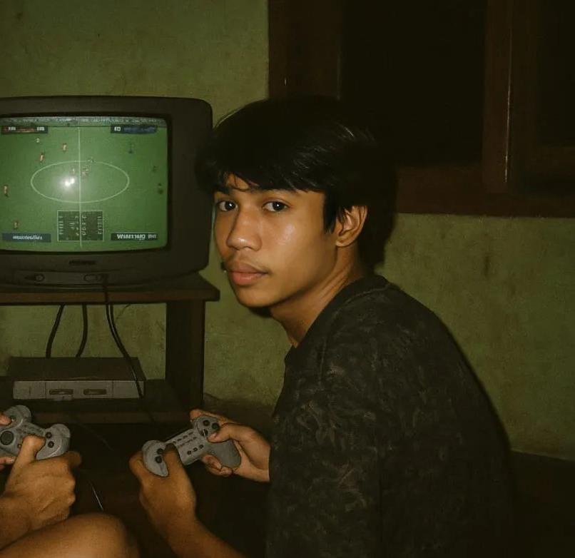

TENTANG SAYA
Halo! Nama saya Washiatul Akmal, biasa dipanggil Akmal atau Nino. Saya berasal dari Kabupaten Sinjai. Saya adalah mahasiswa Jurusan Teknik Informatika dan Komputer di Universitas Negeri Makassar.
Sebelumnya saya aktif di dunia sepakbola, setiap sore pasti ada di lapangan sepakbola. Sekarang saya memiliki minat besar dalam bidang pengembangan web dan pemrograman. Saya senang belajar hal-hal baru, bereksperimen dengan teknologi, dan mengembangkan kemampuan diri secara berkelanjutan. Web portofolio saya ini hanyalah langkah awal!
HOBBY:
Coding
Gaming
Football
Movie
Music
Cycling
